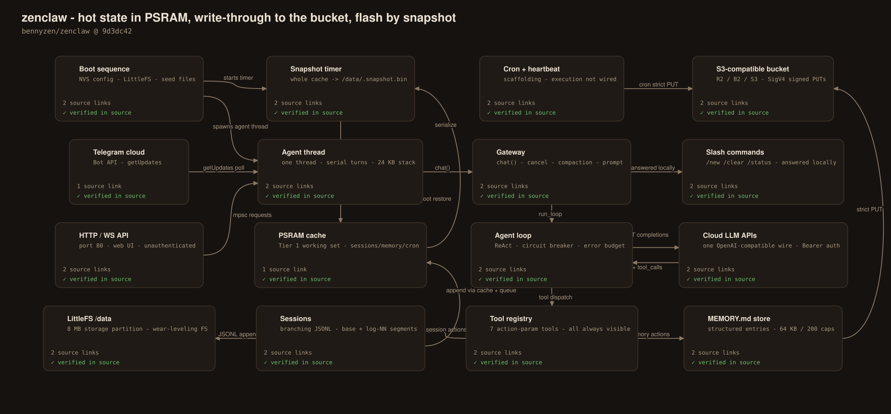
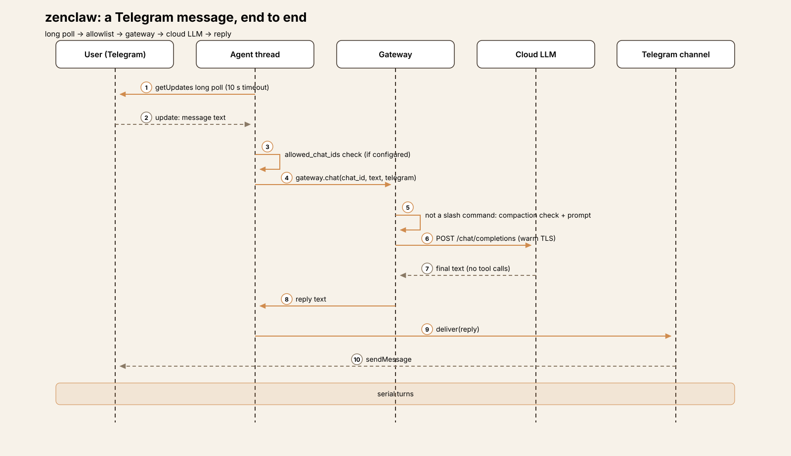
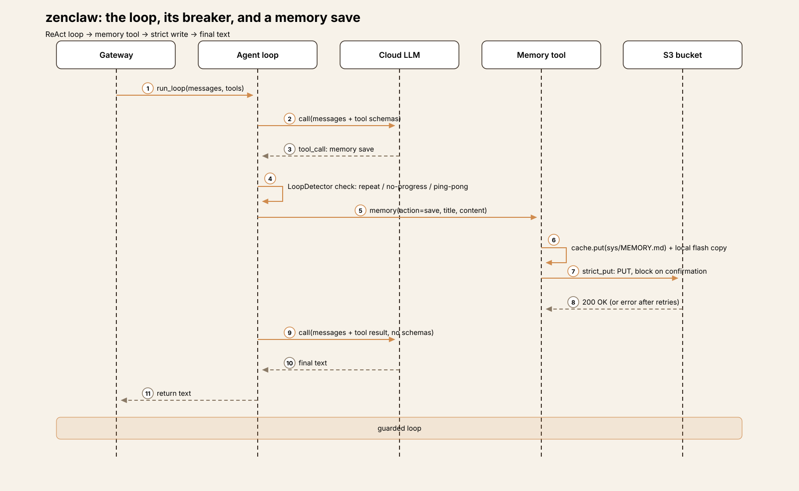
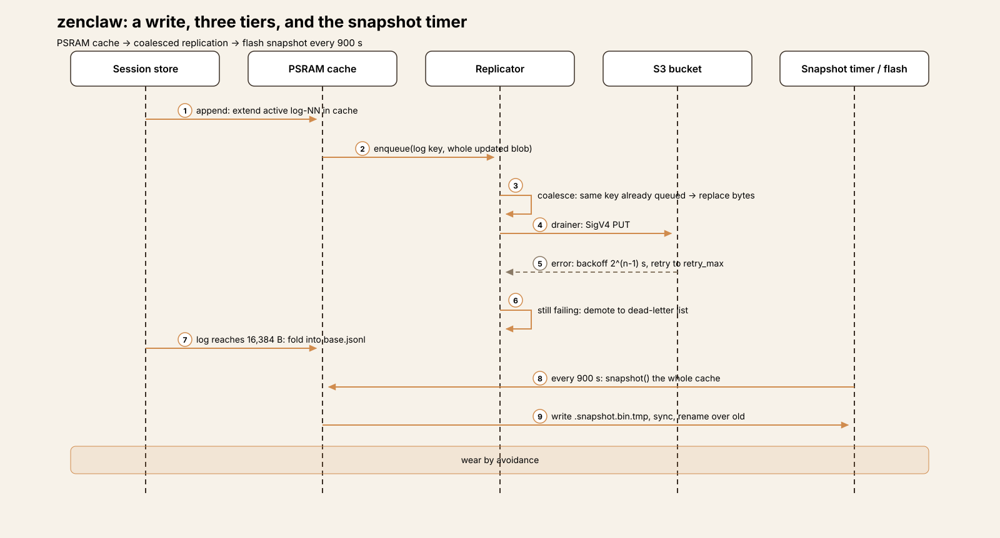
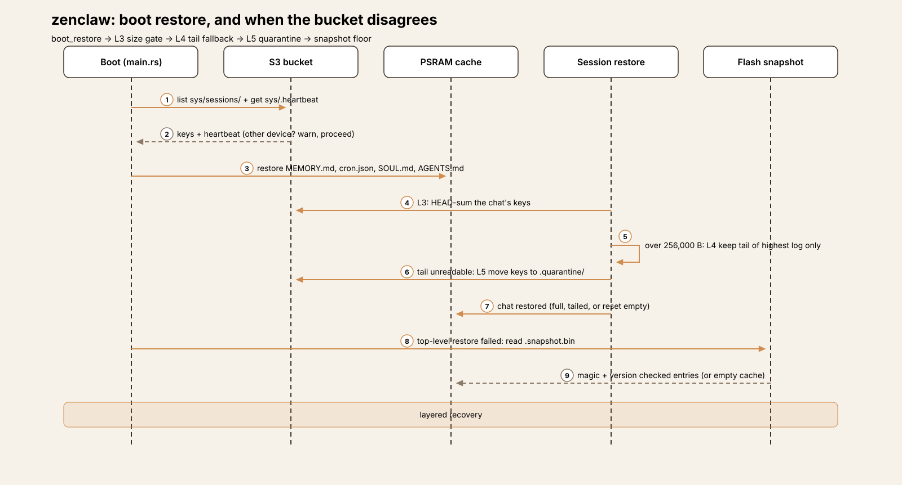
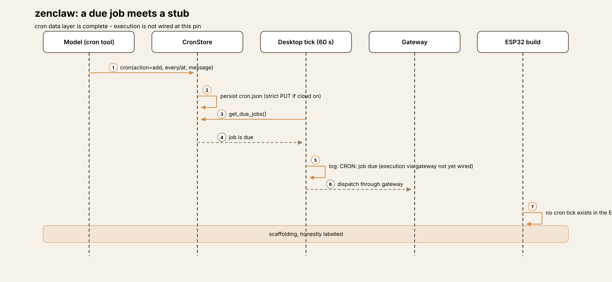

Embedded Harness Anatomy E3: ZenClaw — persistence that routes around the flash
Series: Embedded Harness Anatomy — top-down dissections of agent harnesses that run on microcontrollers, grounded in verifiable pinned firmware. Every behavioral claim below carries a footnote to a pinned GitHub permalink; the full evidence lives in the endnotes.
Version block
- Repo: bennyzen/zenclaw
- Pinned: tag
v0.2.1-zai-tls-fix→9d3dc42480b24463969c00034f060ab3db2b8fca(2026-06-07)1 - Language: Rust, on
esp-idf-svc0.52 (Espressif's Rust bindings over ESP-IDF — the SDK and build system for ESP32 chips). The crate version at the pin is 0.2.02 - License: MIT3
- Claim under test: "A fully autonomous AI agent that runs on a low-cost ESP32-S3 board (8 MB PSRAM) — tool use, persistent memory, multi-channel messaging, all on-device", with "cloud-backed persistence (S3-compatible)" that "protects your data from flash wear and reflashes via transparent write-through replication"4
ZenClaw is the third claw in this series, and it is the first one written in Rust — E1 (ESP-Claw) and E2 (MimiClaw) are both C on ESP-IDF. The language is not the headline, though. The headline is the answer ZenClaw gives to the question E2 set aside: flash memory wears out, so what does an always-on agent do about the storage it writes every turn? E1's answer was to manage the wear — a structured store with compaction. E2's answer was to not think about it — plain files, appended and rewritten whole. ZenClaw's answer is different in kind: route around the flash. Hot state lives in PSRAM, every write replicates write-through to an S3-compatible bucket, and the flash itself receives one periodic, atomic snapshot. The sections below take that design apart piece by piece, including the places where its own configuration promises slightly more than the wiring delivers.
Scale, for orientation: the tree is 176 files; the agent crate is
roughly 19,500 lines of Rust under agent/src/. The big files are
main.rs (2,184 lines), core/sessions/mod.rs (1,879), and
core/tools/memory_tools.rs (1,124) — the entry point and wiring,
the session store, and the memory store. The persistence machinery
this teardown is mostly about — cache, replicator, strict writes,
snapshots, boot restore — is five small modules under
core/cloud/5.
Hardware block
ZenClaw targets two boards through per-board manifests: the ESP32-S3 DevKitC (internal Wi-Fi) and the Guition P4 (an ESP32-P4 board with Ethernet and a microSD slot)6. Both boards carry 16 MB of flash. PSRAM differs: 8 MB octal on the S3 board, 32 MB hex-mode clocked at 200 MHz on the P47. That PSRAM is not headroom in the usual sense — in cloud mode it is the storage tier the agent reads and writes (§ Persistence).
Flash layout is a single partition table, agent/partitions.csv:
| Offset | Size | Name | Purpose |
|---|---|---|---|
| 0x009000 | 24 KB | nvs | Wi-Fi credentials, config JSON, settings |
| 0x00F000 | 4 KB | phy_init | RF calibration |
| 0x010000 | 4 MB | factory | Firmware (single slot — no OTA partitions) |
| — | 8 MB | storage | LittleFS: sessions, memory, data files |
The storage partition is mounted at /data as LittleFS (via the
joltwallet/littlefs ESP-IDF component), with format-on-mount-failure
enabled; the boot code creates the sessions and memory
directories and seeds default persona files there910. The P4's
microSD card, where present, is a second mount (/sdcard, FATFS) for
large files — a capacity tier, not part of the persistence design.

Harness concepts
A five-line box for embedded readers — the harness ideas this teardown uses, translated to this device:
- Turn loop: a ReAct loop (call the model, execute tools, repeat) running on one agent thread. A new message on a chat cancels the turn already running on that chat.
- Tool dispatch: 7 tools, each taking an
actionparameter that selects among several operations — 7 schemas covering a much wider operation set. - Approvals: none, in code. The one approval rule — ask the user before deleting memory on the agent's own initiative — is text in a tool description, not an enforced gate.
- Memory: a structured
MEMORY.mdof titled, tagged entries with hard caps (64 KB, 200 entries) and keyword search. - Persistence: the subject of this teardown — a PSRAM working set, write-through replication to cloud object storage, and a timed snapshot as the only routine flash write for hot state.
The mental model
ZenClaw is a gateway in front of one serial agent thread, with a three-tier storage system underneath. Channels (Telegram, the device's own HTTP/WebSocket API, its web UI) produce chat requests; a single agent thread works through them one at a time; the gateway either answers a request locally (slash commands), or runs it through the cloud LLM tool loop. Everything the loop produces — session entries, memory edits, cron changes — lands in a storage layer whose first tier is volatile memory and whose durable tier is somebody else's disk.
The governing tradeoff is durability-shaped. E2 kept state in the simplest place possible (files on the device's flash) and paid for it in unbounded growth and unconsidered wear. ZenClaw pays the opposite price: a second storage system to configure (a bucket, two keys, a region), a boot sequence that must reconcile three copies of the truth, and a device whose freshest state can live only in RAM and in a cloud account. What that buys is real: state that survives not just flash wear but a reflash, a corrupted filesystem, or a replacement board — because on boot, the device downloads its own past.
Event model

There is no event bus. Two producers feed one consumer:
- HTTP/WebSocket chat. The device's HTTP server hands chat
requests to the agent thread over a standard-library
mpscchannel; the agent thread drains it non-blockingly on each pass of its loop11. - Telegram. The same agent thread long-polls
getUpdates(10-second timeout) between channel drains — one thread services both channels, so turns are strictly serial across all of them11. The poll offset is an in-RAM field that starts at 0 on every boot, so a reboot can see Telegram redeliver recent updates (contrast E2, which persists its offset to NVS and deduplicates redeliveries)12.
The consumer path is Gateway::chat13. Two things can happen to
a message before any model call:
- Slash commands are a local fast path. A recognized command
(
/new,/clear,/status,/help, and peers) is parsed and executed locally and returns without an LLM call — and without the pre-turn compaction check. An unrecognized/foofalls through to the normal model path1415. - A new message cancels the running turn on that chat. The gateway keeps a per-chat cancellation flag; starting a turn sets the previous turn's flag, and the loop checks it before each model call16. E2 had no mid-turn interrupt at all; E1 drained interrupts inside its run machinery. ZenClaw's version is the simplest of the three: same-chat preemption, nothing finer.
Everything else — every ordinary message, on every channel — runs the full ReAct loop against a cloud model. There is no local rule engine and no sensor path; the fast path answers operator commands, not the physical world. Placed against its predecessors: wider than E2's (which had no in-band local path), narrower than E1's (whose rules and Lua scripts act on events in milliseconds without a model).
One event, end to end
The representative path is a Telegram user typing "remember that I prefer short answers", assembled from the verified pieces — each hop is pinned, but this is a reconstruction of the flow, not a recorded trace:
- Ingress. The agent thread's poll returns the message. If an
allowed_chat_idslist is configured and this chat is not on it, the message is logged and skipped; otherwise a typing indicator is sent and the gateway is called17. - Fast-path check. The text is not a slash command, so the gateway checks whether the session branch needs compaction, builds the system prompt from the on-device bootstrap files, and loads the branch history1819.
- Session append. The user entry is appended to the session — in cloud mode, into the PSRAM cache's active log segment, with the updated segment enqueued for replication20.
- LLM call. The ESP32 runner POSTs the conversation to the
configured provider's
/chat/completionsendpoint with Bearer auth, over a reused warm TLS connection21.

- Tool call. The model answers with a
memorytool call (action: "save"). The memory tool parses the store, appends the entry, and writes it back — in cloud mode through the strict path (§ Persistence), which does not return until the bucket confirms22. - Reply. The model produces final text; the assistant entry is appended to the session the same way, and the reply is delivered to Telegram.
If the model instead starts repeating itself — the same tool call with the same result — the loop's circuit breaker intervenes (§ Agent loop); if the provider call fails three times in a row, the turn aborts with an error.
Follow one message through ZenClaw An 8-step trace: Telegram message → allowlist check → gateway → session append → cloud LLM → memory strict write → replySubsystem inventory
LLM layer (cloud-only, one wire for every provider)
Compute placement: the LLM never runs on the chip — the same
placement as E1 and E2. What differs is the provider surface. Where
E2 keeps Anthropic's message shape internally and translates for
OpenAI, ZenClaw speaks one OpenAI-compatible wire to everyone:
the ESP32 runner builds {base_url}/chat/completions, sends Bearer
auth, and relies on each provider's OpenAI-compatible endpoint
(Gemini's included)21. Provider choice is configuration — a
providers map with a default key, per-provider api_key,
model, and base_url — held as one JSON blob in NVS and editable
through the web UI23.
The pinned tag is itself the TLS fix its name advertises: the runner keeps a warm connection to the provider and reuses it across calls, retrying resets, rather than paying a fresh mbedTLS handshake per turn1. Errors are classified before the loop sees them: authentication and balance failures are fatal, rate limits and 5xx are retryable24.
Agent loop: a ReAct loop with a circuit breaker and a conscience
run_loop calls the runner, executes any tool calls, appends the
results, and repeats until the model returns plain text25. Three
guards bound it, and together they are the most distinctive loop
design in the embedded series so far:
- A circuit breaker (
LoopDetector) watches the tool-call stream for three stuck patterns — the same call repeated, calls that make no progress, and two calls ping-ponging — and blocks execution when a pattern trips26. - An error budget: three consecutive provider errors abort the
turn (
MAX_CONSECUTIVE_ERRORS)25. - Continuation nudges: if the model narrates an intention ("I'll save that now:") without emitting a tool call, the loop reminds it and re-calls, up to four times — a guard aimed at a failure mode the other two claws handle by not noticing it25.
There is no fixed iteration cap in the code; the breaker and the error budget are the bounds. A single tool result is capped at 256 KB on ESP32 before it is refused back to the model with an instruction to narrow its scope27. After the first call of a turn, tool schemas are dropped from subsequent requests to shrink the payload — the model is expected to work from the schemas it already saw25.
Persistence: the headline

This is the design the series has been waiting two entries for, so it gets a full section. The README states the problem plainly: "The ESP32 has limited, wear-prone flash storage. Filesystem corruption from power loss, firmware reflashes, or flash wear is a real risk", and names the mitigation — automatic write-through replication to S3-compatible storage28. The implementation is three tiers:
Tier 1 — a PSRAM cache is the working set. When cloud storage is
configured, sessions, MEMORY.md, cron.json, and the identity
files live in an in-memory hash map in PSRAM. All reads come from
the cache; all writes update the cache first29. The flash is not
in the read or write path for hot state at all.
Tier 2 — the bucket is the durable copy, written through on every change, in two strengths:
- Eager (sessions). An append updates the cached segment and enqueues the whole updated blob to the replicator. Enqueue coalesces by key: if that key is already waiting, its bytes are replaced in place, so a burst of appends becomes one PUT of the latest state30. A drainer thread performs the PUTs — requests are SigV4-signed on device, with a hand-rolled signer (sha2 + hmac, no AWS SDK) — retrying failures with exponential backoff (2^(n−1) seconds, capped; defaults: queue depth 32, 5 retries, 60-second cap) and then demoting the entry to a dead-letter list instead of retrying forever3132. A full queue blocks the writer until it drains below half — backpressure reaches all the way into the agent thread.
- Strict (memory, cron, config). Writes that cannot tolerate eventual consistency block on a confirmed PUT, retrying inline, and return the error to the caller when retries run out — a memory save fails visibly, a cron change rolls back, and a config write (which reboots the device) does not proceed on an unconfirmed copy33. Memory and cron additionally write a local flash copy after the strict PUT succeeds, so the file is on the device even if the cloud machinery is later removed22.
Tier 3 — flash receives a snapshot, on a timer. A dedicated
thread serializes the entire cache to /data/.snapshot.bin every
snapshot.interval_secs — 900 seconds by default — in a compact
length-prefixed binary format, writing to a .tmp file, syncing,
and renaming it over the previous snapshot3435. The rename is
the crash story for this tier: a power cut mid-snapshot leaves the
previous good snapshot in place. The configuration comment is the
one place in the tree where wear is named as a design input: the
15-minute cadence "keeps wear low while bounding RPO when the
network drops"36. (RPO — recovery point objective — is how much
recent work a failure can cost; here, at most one interval of
bucket-unreachable writes.)
Two honest qualifications. First, the snapshot's stale-queue
trigger is not wired: the configuration also defines
stale_queue_threshold_secs (default 300 — force an early snapshot
if the replicator's oldest entry has waited longer than that), and
it is parsed and unit-tested, but nothing reads it; the snapshot
thread only sleeps for the interval3635. Second, the design
only engages when cloud storage is configured. With no storage
block, boot skips the whole machinery and the device runs on plain
LittleFS files — sessions appended per chat, memory written whole —
which is E2's model with better-behaved filesystems underneath.
LittleFS is itself a wear-leveling filesystem, but that is the
component's property; ZenClaw's own contribution is the tiering
above it, and it is opt-in.
Sessions: branching trees, log-structured in the cloud
A session is a tree, not a transcript. Entries are messages with
id and parent pointers (plus compaction summaries and leaf
markers); loading a session walks parent pointers from the leaf to
reconstruct the active branch37. In local mode the tree is one
append-only JSONL file per chat, appended with a flush per entry —
malformed lines are skipped with a warning on load, so a torn final
write costs at most its own line38.
Cloud mode gives the tree a log-structured layout: base.jsonl
plus numbered log-NN.jsonl segments per chat. An append extends
the active segment in the cache and enqueues the updated segment;
when a segment reaches log_compaction_bytes (16,384 by default),
it is folded into base.jsonl, a sidecar records the highest
absorbed segment, and the next append starts a fresh segment2039.
The absorbed segments are kept in the cache, the code notes, for
boot-time crash recovery. Note what this compaction is and is not:
it bounds the size of each replicated blob and the work per PUT;
it does not summarize anything. The summarizing compaction is a
separate, LLM-level step (§ Memory).
Crash recovery: a boot sequence with safety layers

Recovery is where the tiering pays off — and where the code is most
careful. On a cloud-enabled boot, boot_restore lists the bucket's
session keys, checks the bucket heartbeat (a different device's
heartbeat fresher than an hour surfaces a conflict warning; boot
proceeds either way), and restores memory, cron, and identity files
into the cache40. Each chat then passes three safety layers:
- L3, the size gate: the chat's keys are HEAD-summed; a total
above
session_max_bytes(256,000 by default) trips the gate. - L4, the tail fallback: an oversized (or partially unreadable)
chat keeps only the last
log_compaction_bytesof its highest log segment — recent context survives, bulk does not. - L5, quarantine: if the tail cannot be read either, the chat's
keys are moved to a
.quarantine/prefix and the session starts empty — explicitly so a corrupt chat cannot cycle through L3→L4→L5 on every reboot41.
If the bucket is unreachable at the top level, boot falls back to
the on-flash snapshot (magic- and version-checked; a bad magic is
treated as corruption); with no snapshot, the device boots with an
empty cache. Every failure path ends in a running device — degraded
history, never a refused boot40. Warnings from the restore
surface on /api/status for the web UI to show.
Memory: structured, capped, searchable
MEMORY.md looks like a file and behaves like a small database.
Entries are titled Markdown blocks with an [id] timestamp (tags:
…) metadata line, managed through one memory tool with save,
search, list, get, edit, and delete actions; search is keyword
scoring (title matches rank above tag matches above body), with no
embeddings42. The store has the first hard bounds in the series:
64 KB total and 200 entries, enforced on write — a save at the
cap fails with an error, and from 70% of either cap, tool results
carry a capacity footer telling the agent to surface the state to
the user and propose a compaction plan rather than deleting
silently43.
The approval-shaped rule lives here, and its exact nature matters: the tool description instructs the model that agent-initiated memory deletion or compaction "must be approved by the user first", while user-initiated deletes run directly42. No code enforces that distinction — it is a prompt-level convention the model is trusted to follow. It is more than E1 or E2 attempt in-band, and less than a gate; the teardown records it as both.
Above the store, prompt assembly reads bootstrap files from the
data directory — SOUL.md, AGENTS.md, TOOLS.md, and peers —
into the system prompt each turn19. Sessions get the LLM-level
compaction E2 lacked: before a turn, if the active branch exceeds
50,000 estimated tokens or 200 KB of JSONL, older entries are
summarized into a compaction entry and the six most recent are
kept44.
Tools: seven schemas, no GPIO, no approvals
The device registry registers exactly 7 tools, each an action-parameter dispatch45:
| Tool | Actions (abridged) | Notes |
|---|---|---|
files |
read, write, edit, list | Rejects paths containing ..46 |
memory |
save, search, list, get, edit, delete | § Memory |
sessions |
status, list, history, … | Branch-aware session access |
gateway |
status, reload | Device/runtime introspection |
storage |
read, write, delete, list, info, grep | Direct bucket access; analyze returns "not yet implemented"47 |
cron |
add, list, remove, run, update | § Cron — data complete, execution unwired |
web |
fetch, request, search | Outbound HTTP(S) |
Two absences define the surface. First, there is no hardware
tool: no GPIO, no I2C, no pin policy — the physical world at this
pin is the filesystem, the SD card, and the network. E2's three
GPIO tools behind a 21-pin allowlist, and E1's 36 Lua hardware
modules, have no counterpart here. Second, there is no approval
gate and no per-session visibility: all 7 tools are offered on
every turn, with safety living in per-tool input checks (the ..
fence is the clearest example), exactly E2's model. The code is
explicit about one more omission: message_send and sub-agents are
left out of the ESP32 registry as "not viable on ESP32 hardware" —
the sub-agent implementation exists and runs in the desktop
build45.
Channels and sender authentication
Channels are Telegram and the device itself: an HTTP/WebSocket API (port 80) serving the web UI and programmatic chat. Authentication splits sharply between them:
- Telegram has an optional allowlist. When
allowed_chat_idsis configured, the agent thread checks each incoming chat against it and skips non-listed chats with a log line — the first sender check on any channel in this series (E2 had none at its tag). The check lives in the agent thread, not the poller, and when the list is absent, any chat that finds the bot can use it17. - The HTTP API has none, by design, and the project documents it
as the trust model.
SECURITY.mdstates that anyone who can reach the device can read every stored secret in cleartext viaGET /api/config(LLM keys, the Telegram token, the S3 secret key — unredacted), read and write the filesystem within its jail, reboot the device, and mint presigned bucket URLs; responses sendAccess-Control-Allow-Origin: *. The documented boundary is the network: run it only on a trusted segment, never port-forwarded48.
The honest summary mirrors E2's, shifted: on Telegram, authorization can now exist; on the LAN, reachability still is authorization — but here that is a stated, documented design decision with a dedicated security file, not an open TODO item.
Cron and heartbeat: complete scaffolding, unwired execution

The cron data layer is finished: jobs (at and every kinds)
persist to cron.json through the strict cloud path when enabled,
due-job detection works, and the model-facing tool manages jobs.
Execution is not wired on either target at this pin. The
desktop background runner ticks every 60 seconds, detects due jobs,
logs "CRON: job due (execution via gateway not yet wired)", and
stops at a TODO on the dispatch line; the ESP32 build has no cron
tick at all. Heartbeat is the same shape: configuration parsed
(default every 300 seconds, disabled by default), a desktop tick
that logs "Heartbeat tick (stub)" beside its own TODO, and nothing
on ESP3249. A job the model creates at this pin is a well-kept
record of an intention, not a future turn.
This deserves a precise comparison with E2, because the failure shape is inverted. E2's README advertised OTA updates as shipped while the module sat outside the build — the claim ran ahead of the wiring. ZenClaw's README carries a Roadmap section that lists cron execution, heartbeat, ESP32 sub-agents, and the MCP client as not yet shipping, with per-item definitions of what "shipped" would mean — and in every case checked, the code agrees with the roadmap50. The teardown records what the build does in both series entries; here, unusually, so does the README.
Extension points and update mechanism
- Persona and behavior (hot):
SOUL.md/AGENTS.mdon the device, editable through the web UI file manager or thefilestool, effective on the next turn's prompt rebuild19. - Memory and sessions (hot, model-writable): through the
memoryandsessionstools, bounded by the caps in § Memory. - Configuration (warm): web UI or
POST /api/config— in cloud mode a strict PUT first, then the NVS write, then a reboot3323. - Data migration (the design's own answer to reflashing): point a freshly flashed device at the same bucket and boot restore rebuilds its sessions, memory, and cron jobs (§ Crash recovery)40.
- Firmware (cold): browser Web Serial flashing or
espflashfrom source. There is no OTA: the partition table has a single 4 MB factory slot and no OTA code exists in the tree8. Firmware updates replace the device; the bucket is what makes that survivable.
Tradeoffs
Durability by delegation. The persistence design is genuinely strong — coalesced write-through, a strict path for the writes that matter most, dead-lettering instead of silent loss, an atomic snapshot, a three-layer restore. Its cost is that the device's memory now depends on a network service and a pair of bucket credentials: with the bucket down, sessions still replicate when it returns (the queue holds), but strict writes fail to the user, and with cloud never configured, the whole apparatus — and the wear story with it — is absent. E2's files-on-flash design works in a cabin with no account anywhere. ZenClaw's best mode does not.
The snapshot is the only routine flash write for hot state — and it is a whole-state rewrite. Every 15 minutes, the full cache is serialized and renamed over the last snapshot. That is a bounded, predictable wear budget — the point of the design — but the write size grows with total state, not with what changed, and the one mechanism that would have tightened it (the stale-queue early snapshot) sits parsed and untested-in-production, read by no code3635. No erase-count or endurance figures appear anywhere in the repo, so the budget's adequacy rests on the cadence argument alone — the repo states no flash endurance numbers, and none are claimed here.
Serial turns, again. One agent thread for two channels means a long tool loop delays Telegram and web users alike, with same-chat cancellation as the only relief. The design spends its complexity budget on storage rather than concurrency — a defensible allocation for a personal device, and a real limit for a shared one.
A candid roadmap is part of the artifact. Cron, heartbeat, sub-agents, and MCP are all visibly unfinished, and the README says so with acceptance criteria. A reader evaluating ZenClaw gets an accurate map of what runs today. That is rarer in this series than it should be, and worth naming as a strength of the project rather than only a list of gaps.
Comparison row
1. Compute placement — cloud-only, one wire. The LLM never runs
on the chip: every provider is reached over a single
OpenAI-compatible /chat/completions POST with Bearer auth21.
Same placement as E1 and E2; the difference is shape — E1 offered
three backend forms, E2 two with an internal translation layer,
ZenClaw one wire for all.
2. Power envelope — always-on, one brochure number. No sleep path was found in the ESP32 build; the device polls, serves, and replicates around the clock. The only power figure in the repo is the README's "Runs on 0.5 watts. Always on" — recorded here as [UNVERIFIED] beyond the README line itself4.
3. Connectivity dependence — high, but layered. The model, Telegram, and the bucket are all network services; boot without a bucket still works (snapshot or empty cache), and boot without Wi-Fi leaves the serial console and a device waiting to be configured. Offline, stored state is readable locally, but no turn can run — the same dependence as E2, softened at the storage layer only40.
4. Event model — serial gateway turns, plus a command fast path. One agent thread drains an mpsc channel and a Telegram poll loop; recognized slash commands execute locally, everything else runs the full loop, and a new message cancels the running turn on its chat111416. Between E1's bus and E2's single queue in spirit — closest to E2, with the fast path E2 lacked.
5. Sensor/actuator interface — none. No GPIO or hardware tool exists at this pin; the tool surface is files, memory, sessions, cron data, web, gateway status, and the bucket itself45. The smallest physical surface in the series — smaller even than E2's three pin tools.
6. Model footprint — the prompt is files. No on-device model; the footprint is the bootstrap files plus branch history, with LLM compaction at 50,000 estimated tokens or 200 KB keeping the branch bounded1944.
7. Memory architecture — the series' first wear design. A PSRAM
working set; write-through S3 replication (coalesced eager path for
sessions, blocking strict path for memory/cron/config); flash
receives a 15-minute atomic whole-cache snapshot and local copies
of memory/cron. Structured MEMORY.md capped at 64 KB / 200
entries; sessions as branching JSONL, log-structured into
base + segments in cloud mode2930344339. E1 managed
wear on-device; E2 did not address it; ZenClaw routes around the
medium.
8. Update mechanism — reflash, restore from bucket. Single-slot firmware, no OTA; behavior and config update hot; the data survives a reflash by restore from the bucket on boot840.
9. Real-time constraints — seconds, except commands. Slash commands answer locally at once; all other interactions pay a cloud round-trip. Internal deadlines are storage-shaped: a 900-second snapshot cadence, replicator backoff capped at 60 seconds, a 256 KB tool-result ceiling14323627.
10. Failure & safety — layered recovery, open LAN. Failures are absorbed in layers: malformed session lines skipped, torn snapshots prevented by rename, corrupt chats quarantined, failed replications dead-lettered, strict failures surfaced3834413133. Safety is per-tool input checks and an optional Telegram allowlist around an always-visible tool set — with an unauthenticated HTTP API whose exposure the project documents as its trust model461748.
What transfers
What embedded teaches harness design. Write coalescing by key
is a small idea with wide application: any system that persists
conversational state by rewriting blobs — session files, memory
stores, checkpoint writers — can collapse a burst of writes into
one durable write of the latest state, and most currently do not.
The strict/eager split is the companion lesson: durability is not
one property. Session appends can be eventual; the write that a
reboot depends on cannot — and the code should say which is which,
per call site, the way strict_put and the replicator do. Desktop
harnesses that treat every save as equally synchronous, or equally
casual, are leaving a design decision unmade.
What harness design teaches embedded. The unwired stale-queue threshold is the desktop series' familiar lesson in embedded clothes: a configuration value that nothing reads is a promise the system does not keep, and the only reliable detector is reading the wiring, not the config schema — the same discipline that caught E2's unbuilt OTA module. ZenClaw mostly passes that audit (its roadmap is accurate), which is exactly why the one missed wire stands out. And the prompt-level memory-approval rule shows a harness convention arriving on embedded hardware before the enforcement mechanism does; whether a future version grows a real gate — and what it costs on this hardware — is a question E4 and beyond can keep asking.
Endnotes
-
Pinned tag
v0.2.1-zai-tls-fix(2026-06-07), commit9d3dc42480b24463969c00034f060ab3db2b8fca("reuse warm TLS connection + retry resets, surface API errors"): https://github.com/bennyzen/zenclaw/tree/9d3dc42480b24463969c00034f060ab3db2b8fca ↩↩ -
Crate version 0.2.0;
esp-idf-svc0.52: https://github.com/bennyzen/zenclaw/blob/9d3dc42480b24463969c00034f060ab3db2b8fca/agent/Cargo.toml#L3, https://github.com/bennyzen/zenclaw/blob/9d3dc42480b24463969c00034f060ab3db2b8fca/agent/Cargo.toml#L50 ↩ -
License (MIT, Copyright (c) 2026 bennyzen): https://github.com/bennyzen/zenclaw/blob/9d3dc42480b24463969c00034f060ab3db2b8fca/LICENSE ↩
-
"A fully autonomous AI agent that runs on a low-cost ESP32-S3 board (8 MB PSRAM)…"; "Runs on 0.5 watts. Always on. Always yours.": https://github.com/bennyzen/zenclaw/blob/9d3dc42480b24463969c00034f060ab3db2b8fca/README.md#L18-L20 ↩↩
-
Agent crate tree under
agent/src/(file sizes per the pinned tree;main.rs2,184 lines,sessions/mod.rs1,879,memory_tools.rs1,124, cloud modules undercore/cloud/): https://github.com/bennyzen/zenclaw/tree/9d3dc42480b24463969c00034f060ab3db2b8fca/agent/src ↩ -
Board manifests (DevKitC: esp32s3, Wi-Fi features; Guition P4: esp32p4, Ethernet + sdcard features): https://github.com/bennyzen/zenclaw/blob/9d3dc42480b24463969c00034f060ab3db2b8fca/agent/boards/devkitc.toml, https://github.com/bennyzen/zenclaw/blob/9d3dc42480b24463969c00034f060ab3db2b8fca/agent/boards/guition-p4.toml ↩
-
16 MB flash; S3 8 MB octal PSRAM; P4 32 MB hex PSRAM at 200 MHz: https://github.com/bennyzen/zenclaw/blob/9d3dc42480b24463969c00034f060ab3db2b8fca/agent/sdkconfig.defaults, https://github.com/bennyzen/zenclaw/blob/9d3dc42480b24463969c00034f060ab3db2b8fca/agent/sdkconfig.board.devkitc, https://github.com/bennyzen/zenclaw/blob/9d3dc42480b24463969c00034f060ab3db2b8fca/agent/sdkconfig.board.guition-p4 ↩
-
Partition table
partitions.csv(nvs 24 KB, phy_init 4 KB, factory 4 MB, storage 8 MB LittleFS; no OTA partitions): https://github.com/bennyzen/zenclaw/blob/9d3dc42480b24463969c00034f060ab3db2b8fca/agent/partitions.csv ↩↩↩ -
LittleFS component (
joltwallet/littlefs1.21.1): https://github.com/bennyzen/zenclaw/blob/9d3dc42480b24463969c00034f060ab3db2b8fca/agent/Cargo.toml#L97 ↩ -
LittleFS mounted at
/datawithformat_if_mount_failed; sessions/memory directories created; workspace defaults seeded: https://github.com/bennyzen/zenclaw/blob/9d3dc42480b24463969c00034f060ab3db2b8fca/agent/src/main.rs#L232-L275 ↩ -
Agent thread: drains the HTTP chat mpsc channel non-blockingly, then long-polls Telegram, in one loop: https://github.com/bennyzen/zenclaw/blob/9d3dc42480b24463969c00034f060ab3db2b8fca/agent/src/main.rs#L2040-L2083 ↩↩↩
-
Telegram poller:
getUpdateswith an in-RAMoffsetfield initialized to 0: https://github.com/bennyzen/zenclaw/blob/9d3dc42480b24463969c00034f060ab3db2b8fca/agent/src/core/channels/telegram.rs#L29-L56 ↩ -
Gateway::chatentry point: https://github.com/bennyzen/zenclaw/blob/9d3dc42480b24463969c00034f060ab3db2b8fca/agent/src/core/gateway.rs#L133-L146 ↩ -
Slash-command interception: recognized commands skip the LLM entirely (and the auto-compaction step): https://github.com/bennyzen/zenclaw/blob/9d3dc42480b24463969c00034f060ab3db2b8fca/agent/src/core/gateway.rs#L164-L197 ↩↩↩
-
Command set and parser (
/new,/clear,/status,/help, …; unknown commands returnNone): https://github.com/bennyzen/zenclaw/blob/9d3dc42480b24463969c00034f060ab3db2b8fca/agent/src/core/commands.rs#L95, https://github.com/bennyzen/zenclaw/blob/9d3dc42480b24463969c00034f060ab3db2b8fca/agent/src/core/commands.rs#L200-L215 ↩ -
Per-chat cancellation: a new turn sets the previous turn's flag before starting: https://github.com/bennyzen/zenclaw/blob/9d3dc42480b24463969c00034f060ab3db2b8fca/agent/src/core/gateway.rs#L153-L162 ↩↩
-
Telegram allowlist enforced in the agent thread (non-listed chats logged and skipped): https://github.com/bennyzen/zenclaw/blob/9d3dc42480b24463969c00034f060ab3db2b8fca/agent/src/main.rs#L2085-L2094 ↩↩↩
-
Auto-compaction check before history load in
chat_with_events: https://github.com/bennyzen/zenclaw/blob/9d3dc42480b24463969c00034f060ab3db2b8fca/agent/src/core/gateway.rs#L199-L215 ↩ -
Bootstrap context files (SOUL/AGENTS/TOOLS/USER and peers) loaded from the data directory for the prompt: https://github.com/bennyzen/zenclaw/blob/9d3dc42480b24463969c00034f060ab3db2b8fca/agent/src/core/workspace.rs#L13-L58 ↩↩↩↩
-
Cloud append: extend the active log segment in cache, enqueue the updated blob, compact at the threshold: https://github.com/bennyzen/zenclaw/blob/9d3dc42480b24463969c00034f060ab3db2b8fca/agent/src/core/sessions/mod.rs#L617-L636 ↩↩
-
ESP32 runner:
{base_url}/chat/completionswith Bearer auth; every provider exposes/chat/completions: https://github.com/bennyzen/zenclaw/blob/9d3dc42480b24463969c00034f060ab3db2b8fca/agent/src/esp32/runner.rs#L13-L16, https://github.com/bennyzen/zenclaw/blob/9d3dc42480b24463969c00034f060ab3db2b8fca/agent/src/esp32/runner.rs#L38-L66 ↩↩↩ -
Memory write: cache update, then
strict_put, then the local flash copy: https://github.com/bennyzen/zenclaw/blob/9d3dc42480b24463969c00034f060ab3db2b8fca/agent/src/core/tools/memory_tools.rs#L385-L410 ↩↩ -
Config JSON loaded from NVS (namespace
config, keyjson), defaults otherwise: https://github.com/bennyzen/zenclaw/blob/9d3dc42480b24463969c00034f060ab3db2b8fca/agent/src/main.rs#L401-L430 ↩↩ -
Provider error classification (auth/balance fatal; rate-limit and server errors retryable): https://github.com/bennyzen/zenclaw/blob/9d3dc42480b24463969c00034f060ab3db2b8fca/agent/src/core/runner.rs#L37-L95 ↩
-
run_loop: LLM/tool cycle, 3-consecutive-error abort, continuation nudges, tool schemas dropped after the first call: https://github.com/bennyzen/zenclaw/blob/9d3dc42480b24463969c00034f060ab3db2b8fca/agent/src/core/agent_loop.rs#L10, https://github.com/bennyzen/zenclaw/blob/9d3dc42480b24463969c00034f060ab3db2b8fca/agent/src/core/agent_loop.rs#L29-L140 ↩↩↩↩ -
LoopDetector circuit breaker (repeat, no-progress, ping-pong detection): https://github.com/bennyzen/zenclaw/blob/9d3dc42480b24463969c00034f060ab3db2b8fca/agent/src/core/tool_loop.rs#L32-L70 ↩
-
Tool-result cap on ESP32 (
MAX_TOOL_RESULT_BYTES= 256 KB): https://github.com/bennyzen/zenclaw/blob/9d3dc42480b24463969c00034f060ab3db2b8fca/agent/src/core/agent_loop.rs#L13-L19 ↩↩ -
"The ESP32 has limited, wear-prone flash storage… ZenClaw mitigates this with automatic write-through replication to S3-compatible cloud storage": https://github.com/bennyzen/zenclaw/blob/9d3dc42480b24463969c00034f060ab3db2b8fca/README.md#L151-L160 ↩
-
CloudCache: PSRAM-backed working set; "all Tier 1 reads come from here; writes update here first": https://github.com/bennyzen/zenclaw/blob/9d3dc42480b24463969c00034f060ab3db2b8fca/agent/src/core/cloud/cache.rs#L1-L30 ↩↩
-
Replicator enqueue coalesces by key; a full queue blocks until depth drops below half-cap: https://github.com/bennyzen/zenclaw/blob/9d3dc42480b24463969c00034f060ab3db2b8fca/agent/src/core/cloud/replicator.rs#L77-L97 ↩↩
-
Drainer: PUT with exponential backoff, retry_max, then dead-letter: https://github.com/bennyzen/zenclaw/blob/9d3dc42480b24463969c00034f060ab3db2b8fca/agent/src/core/cloud/replicator.rs#L1-L7, https://github.com/bennyzen/zenclaw/blob/9d3dc42480b24463969c00034f060ab3db2b8fca/agent/src/core/cloud/replicator.rs#L133-L185 ↩↩
-
Storage defaults (queue_max 32, retry_max 5, backoff cap 60 s; session_max 256,000; log_compaction 16,384): https://github.com/bennyzen/zenclaw/blob/9d3dc42480b24463969c00034f060ab3db2b8fca/agent/src/config.rs#L190-L208, https://github.com/bennyzen/zenclaw/blob/9d3dc42480b24463969c00034f060ab3db2b8fca/agent/src/config.rs#L344-L360 ↩↩
-
Strict path: block on S3 confirmation, retry inline, return the error after exhaustion; used by memory saves, cron updates, and config writes: https://github.com/bennyzen/zenclaw/blob/9d3dc42480b24463969c00034f060ab3db2b8fca/agent/src/core/cloud/strict.rs#L1-L44 ↩↩↩
-
Snapshot write: tmp file,
sync_all, atomic rename; length-prefixed binary format: https://github.com/bennyzen/zenclaw/blob/9d3dc42480b24463969c00034f060ab3db2b8fca/agent/src/core/cloud/snapshots.rs#L1-L17, https://github.com/bennyzen/zenclaw/blob/9d3dc42480b24463969c00034f060ab3db2b8fca/agent/src/core/cloud/snapshots.rs#L41-L53 ↩↩↩ -
Snapshot timer thread: sleeps for the configured interval, writes the snapshot, logs failures: https://github.com/bennyzen/zenclaw/blob/9d3dc42480b24463969c00034f060ab3db2b8fca/agent/src/main.rs#L553-L571 ↩↩↩
-
Snapshot config: "Default 15 min keeps wear low while bounding RPO when the network drops"; the stale-queue threshold field (default 300 s) is defined alongside: https://github.com/bennyzen/zenclaw/blob/9d3dc42480b24463969c00034f060ab3db2b8fca/agent/src/config.rs#L291-L308 ↩↩↩↩
-
Session entry types (Message with parent pointer, Compaction, session_info leaf markers): https://github.com/bennyzen/zenclaw/blob/9d3dc42480b24463969c00034f060ab3db2b8fca/agent/src/core/sessions/mod.rs#L14-L41 ↩
-
Local append (entry + session_info lines, flush) and malformed-line skipping on load: https://github.com/bennyzen/zenclaw/blob/9d3dc42480b24463969c00034f060ab3db2b8fca/agent/src/core/sessions/mod.rs#L443-L470, https://github.com/bennyzen/zenclaw/blob/9d3dc42480b24463969c00034f060ab3db2b8fca/agent/src/core/sessions/mod.rs#L740-L753 ↩↩
-
compact_log: fold the active log intobase.jsonl, recordhighest_absorbed_log, keep the absorbed log for crash recovery: https://github.com/bennyzen/zenclaw/blob/9d3dc42480b24463969c00034f060ab3db2b8fca/agent/src/core/sessions/mod.rs#L638-L668 ↩↩ -
boot_restore: heartbeat check, memory/cron/identity restore, per-chat safety layers, snapshot fallback on top-level failure (fallback wiring inmain.rs): https://github.com/bennyzen/zenclaw/blob/9d3dc42480b24463969c00034f060ab3db2b8fca/agent/src/core/cloud/boot.rs#L88-L171, https://github.com/bennyzen/zenclaw/blob/9d3dc42480b24463969c00034f060ab3db2b8fca/agent/src/main.rs#L505-L545 ↩↩↩↩↩ -
L4 tail-fallback and L5 quarantine (move keys to
.quarantine/, reset the session): https://github.com/bennyzen/zenclaw/blob/9d3dc42480b24463969c00034f060ab3db2b8fca/agent/src/core/cloud/boot.rs#L230-L360 ↩↩ -
Memory tool: entry format, save/search/list/get/edit/ delete actions, keyword search, and the tool-description rule that agent-initiated compaction/deletion needs user approval: https://github.com/bennyzen/zenclaw/blob/9d3dc42480b24463969c00034f060ab3db2b8fca/agent/src/core/tools/memory_tools.rs#L1-L26, https://github.com/bennyzen/zenclaw/blob/9d3dc42480b24463969c00034f060ab3db2b8fca/agent/src/core/tools/memory_tools.rs#L62-L97 ↩↩
-
Memory caps: 64 KB total, 200 entries, 70% warning threshold: https://github.com/bennyzen/zenclaw/blob/9d3dc42480b24463969c00034f060ab3db2b8fca/agent/src/core/tools/memory_tools.rs#L45-L58 ↩↩
-
LLM compaction trigger (token or byte threshold) and defaults (50,000 tokens, 200 KB, keep 6 recent): https://github.com/bennyzen/zenclaw/blob/9d3dc42480b24463969c00034f060ab3db2b8fca/agent/src/core/compaction.rs#L20-L45, https://github.com/bennyzen/zenclaw/blob/9d3dc42480b24463969c00034f060ab3db2b8fca/agent/src/config.rs#L34-L56 ↩↩
-
register_defaults: 7 tools; "message_send and subagent omitted — not viable on ESP32 hardware": https://github.com/bennyzen/zenclaw/blob/9d3dc42480b24463969c00034f060ab3db2b8fca/agent/src/core/tools/mod.rs#L82-L91 ↩↩↩ -
File tool rejects paths containing
..: https://github.com/bennyzen/zenclaw/blob/9d3dc42480b24463969c00034f060ab3db2b8fca/agent/src/core/tools/file_tools.rs#L46-L56 ↩↩ -
Storage tool
analyze: "Storage analyze not yet implemented.": https://github.com/bennyzen/zenclaw/blob/9d3dc42480b24463969c00034f060ab3db2b8fca/agent/src/core/tools/storage_tools.rs#L152 ↩ -
Trust model: unauthenticated HTTP/WebSocket API, cleartext secrets via
GET /api/config, presigned-URL minting,Access-Control-Allow-Origin: *; trusted-network-only guidance: https://github.com/bennyzen/zenclaw/blob/9d3dc42480b24463969c00034f060ab3db2b8fca/SECURITY.md ↩↩ -
Cron detection without execution (desktop runner log + TODO); heartbeat tick stub; neither target runs a reflection or cron turn: https://github.com/bennyzen/zenclaw/blob/9d3dc42480b24463969c00034f060ab3db2b8fca/agent/src/desktop/background/mod.rs#L25-L40, https://github.com/bennyzen/zenclaw/blob/9d3dc42480b24463969c00034f060ab3db2b8fca/agent/src/desktop/background/mod.rs#L44-L80 ↩
-
README Roadmap: sub-agents, heartbeat, and cron execution each listed as not yet shipping, with "shipped when" criteria; cron entry: "no job has ever actually run. ESP32 has no cron tick at all": https://github.com/bennyzen/zenclaw/blob/9d3dc42480b24463969c00034f060ab3db2b8fca/README.md#L205-L232 ↩